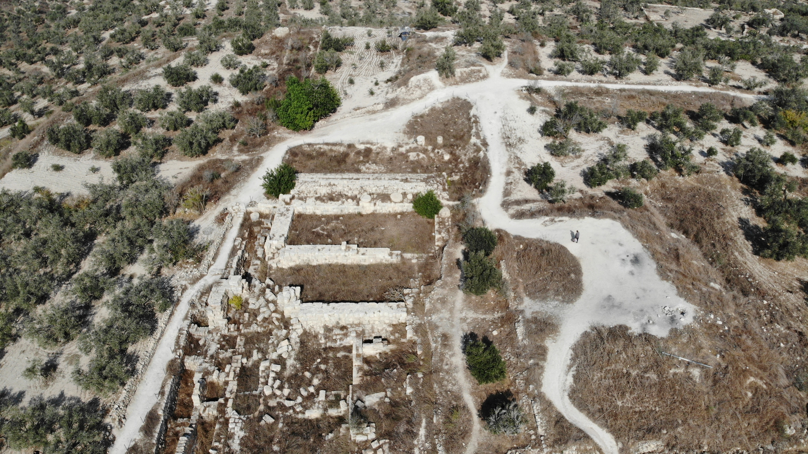

Samaria (Ancient City and Sebaste)

- Find Name
- Samaria (Ancient City and Sebaste)
- Description
- The capital of the northern kingdom of Israel, founded by Omri c. 880 BC on a hill bought from Shemer for two talents of silver (1 Kings 16:24), and capital until the Assyrian capture in 722 BC. The acropolis holds one of the largest Iron Age palaces in the Levant: an Omride palace on a 4 m rock-cut platform, enlarged under Ahab into a casemate-walled royal compound about 90 x 180 m, with two rock-cut tomb chambers below the palace now attributed to Omri and Ahab. Herod the Great later rebuilt the city as Sebaste in honour of Augustus, with a temple to Augustus, fortifications and a forum. This entry covers the city, palace-acropolis and Herodian rebuilding only; the Samaria Ivories and Samaria Ostraca have their own entries.
- Historical Period
- Iron Age II–Roman
- Evidence Class
- Contextual
- Interpretations
- The city's identity is secure. The phasing of the palace is debated: the Harvard reading of two phases (Omri, then Ahab) is questioned by Ussishkin, who argues both phases may belong to a single building programme, and by Finkelstein, who reads the earliest phase as an agricultural estate before the palace. The tomb chambers' attribution to Omri and Ahab is recent and inferential, not inscribed. The ivories and ostraca are not re-argued here.
- Alternative Names
- Sebaste; Sebastia; Shomron
- Related Places
- Related Books
- Related Events
- Related People
- Scripture Illuminated
- Biblical Significance
- Samaria is the rival capital: the city of Ahab and Jezebel, of the 'ivory house', of Baal's temple and of the siege and fall that ended the northern kingdom. Its palace platform and tombs give the Omride story a floor plan — a dynasty that built in stone while its prophets said its house would fall — and its Herodian rebirth as Sebaste shows the same hill still commanding the same roads in the age of the apostles.
- Artifact Date
- c. 880 BC - 1st century AD (Israelite capital; Herodian Sebaste)
- Current Location
- In situ, Sebastia, West Bank
- Date Discovered
- 1908-1910 (Harvard Expedition, Schumacher, Reisner, Fisher); 1931-1935 (Joint Expedition, Crowfoot, Kenyon)
- Discovery Location
- Sebastia, hill north-west of Nablus, West Bank
- Timeline Era
- Divided Monarchy
Awaiting Review Not yet checked against scholarly sources. Treat its claims as provisional until this entry is reviewed. About verification
Last reviewed: not yet reviewed